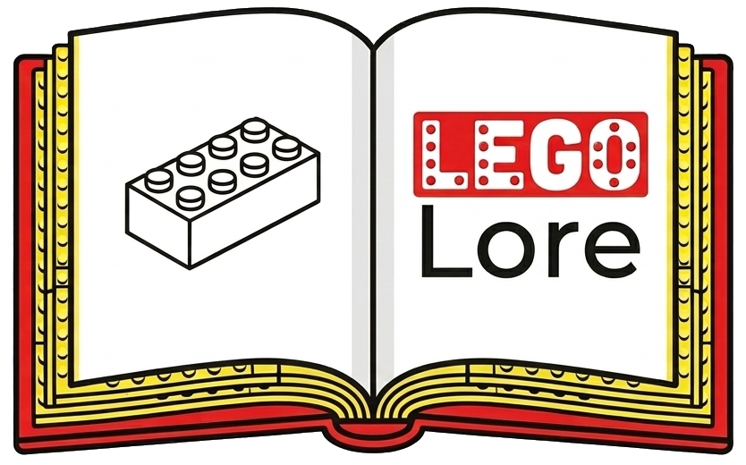
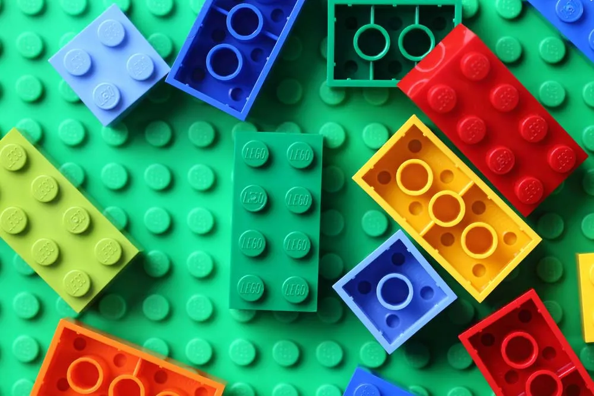
The purpose of this site is to show people LEGO sets throughout the years, and go over a few notable franchises. There is a timeline below with an overview of the history, and there are pages on the LEGO Star Wars and LEGO The Lord of the Rings franchises.
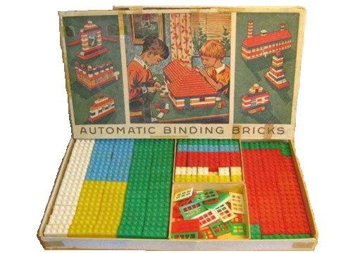
The beginning of LEGO bricks as we know them today. This was a very basic set with little variety, but would lay a foundation for the LEGO we know today.
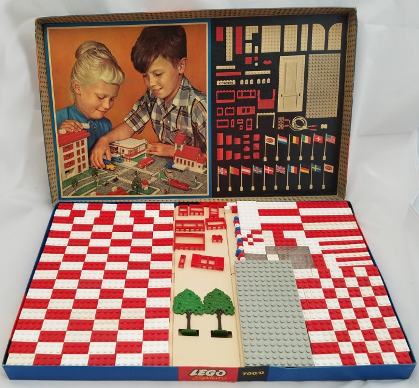
Larger "Gift Packages" much like this one contained a variety of bricks, though they were lacking in the instructions we know today.
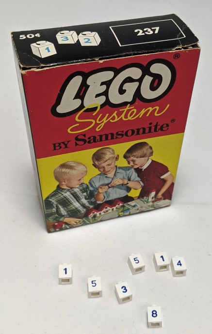
Individual brick packs much like this one were where one could get more variety for their LEGO products.
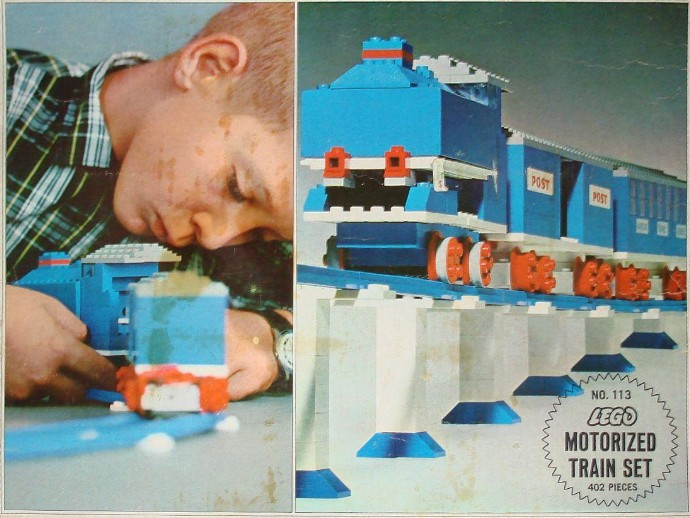
This is an early train set made by LEGO, near the beginning of the longest-lasting LEGO series, LEGO Trains. The trains would go through many transformations throughout the years.
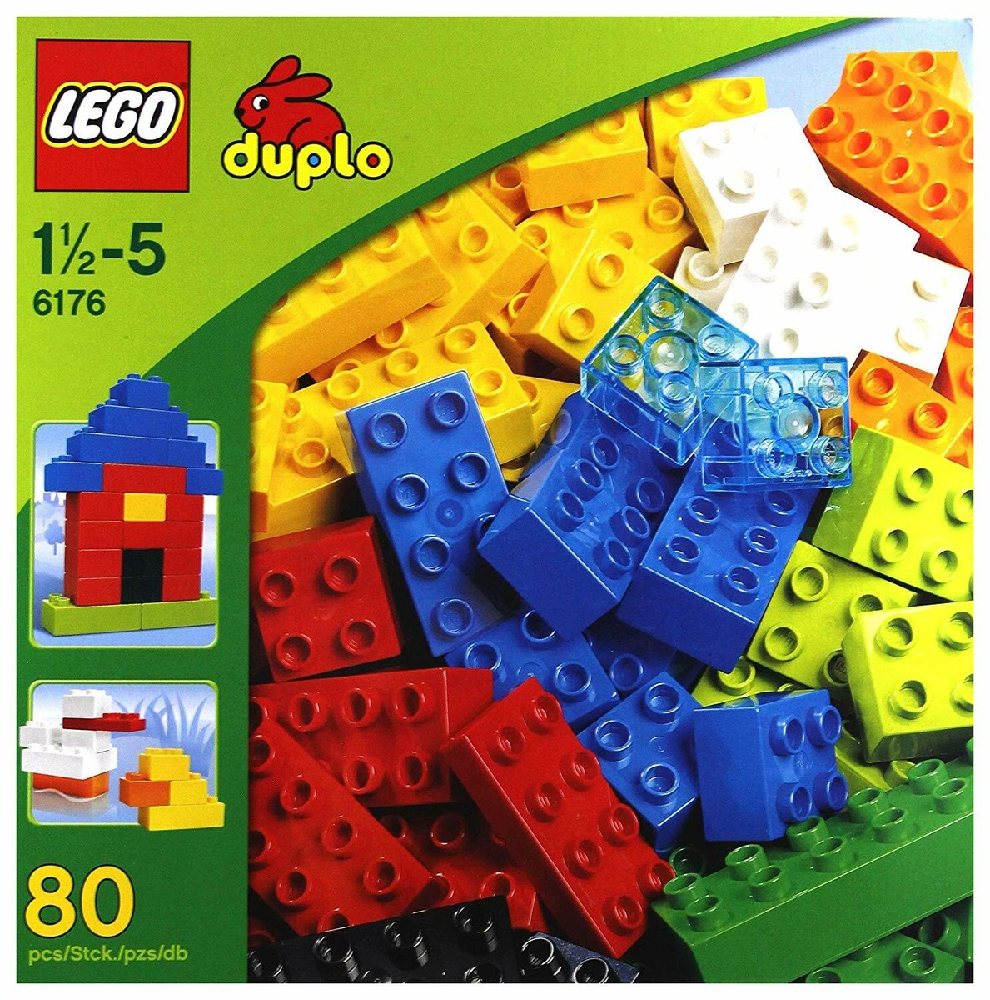
This franchise is catered for young children below the age of 5. Featuring larger bricks than traditional lego, which helps prevent the bricks from being swallowed by young children, these bricks are still able to fit with regular size LEGOs.
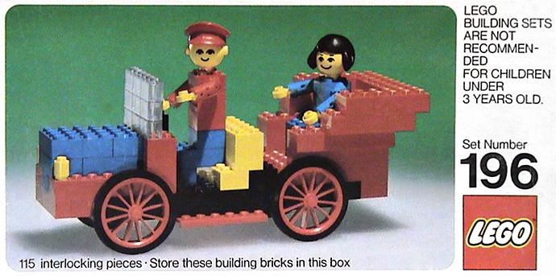
This is one of the first sets that bears resemblance to the LEGO that we know today. With instructions for building and posable figures one could say this is where LEGO truly began.
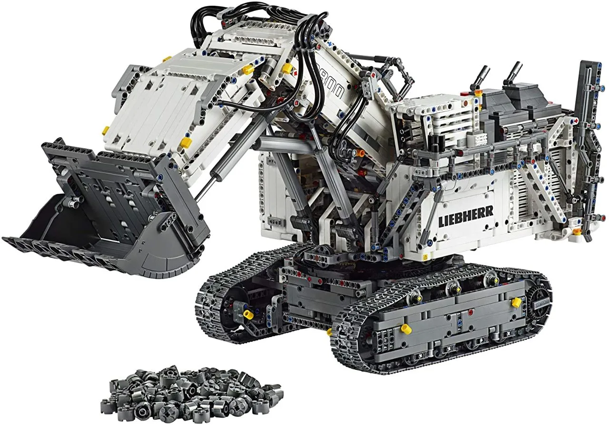
Introduced as Expert Builder or Technical Sets, this franchise uses special pieces such as gears and axles to make more complex sets than traditional LEGO. Technic pieces are included in other franchises, often to make things happen around the set.
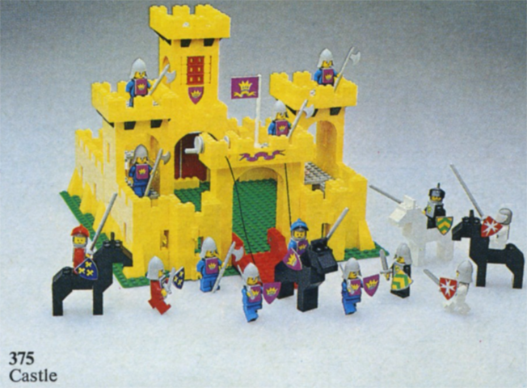
This early set, simply known as "Castle", would start one of the more well-known LEGO franchises, LEGO Castle. Featuring knights and castles, many people's first experiences with LEGO is with this franchise, which would discontinue in 2013.
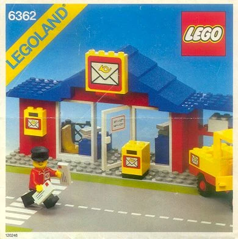
This franchise (also known as "Town") launched at the same time as LEGO Castle and LEGO Space, showing more of the "everyday" compared to the other two settings. The franchise would eventually rebrand to LEGO City in 2005, which has sets still releasing today.
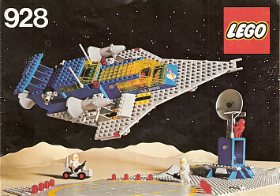
This early set is an old favorite of many, kicking off the LEGO Space franchise. This franchise would end the same year as LEGO Castle.
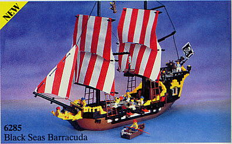
This set would kick off the LEGO Pirates franchise, which came to an end in 2015. This franchise would hold a similar place as LEGO Castle, with many people's early sets being from this franchise.
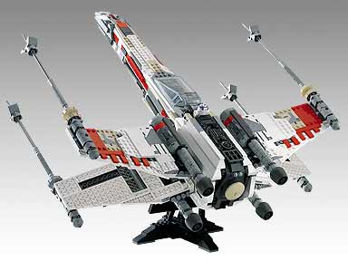
This franchise is discussed in detail on the Star Wars page of this website.
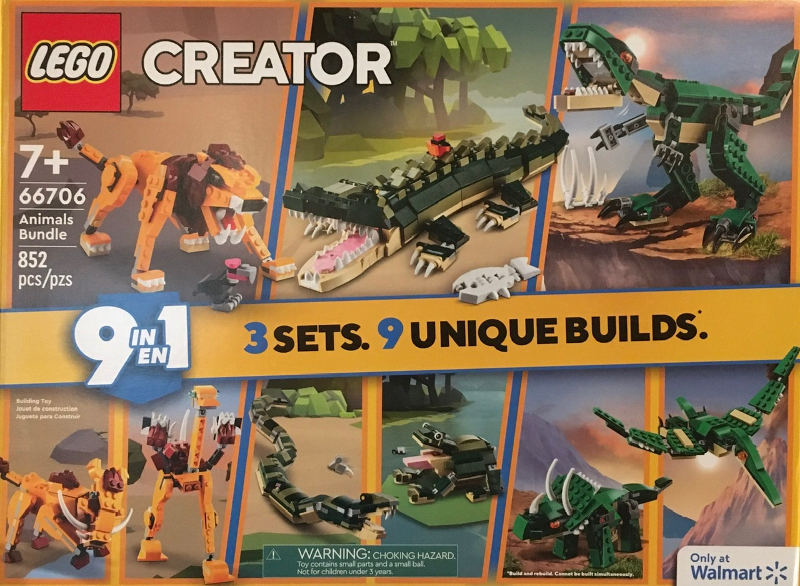
This franchise didn't have an identity until 2006, where the first sets to use "3-in-1" labeling were created. This would go on to be the hallmark of LEGO Creator.
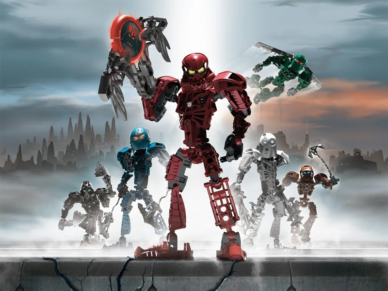
One of the most-selling properties of LEGO, Bionicle was the first LEGO franchise to include an overarching storyline. The story may have been what drew so many people into the franchise, and there are many Bionicle fans today. There is even an event know to the community as "The" Dream", which most Bionicle fans have experienced at some point in their lives.
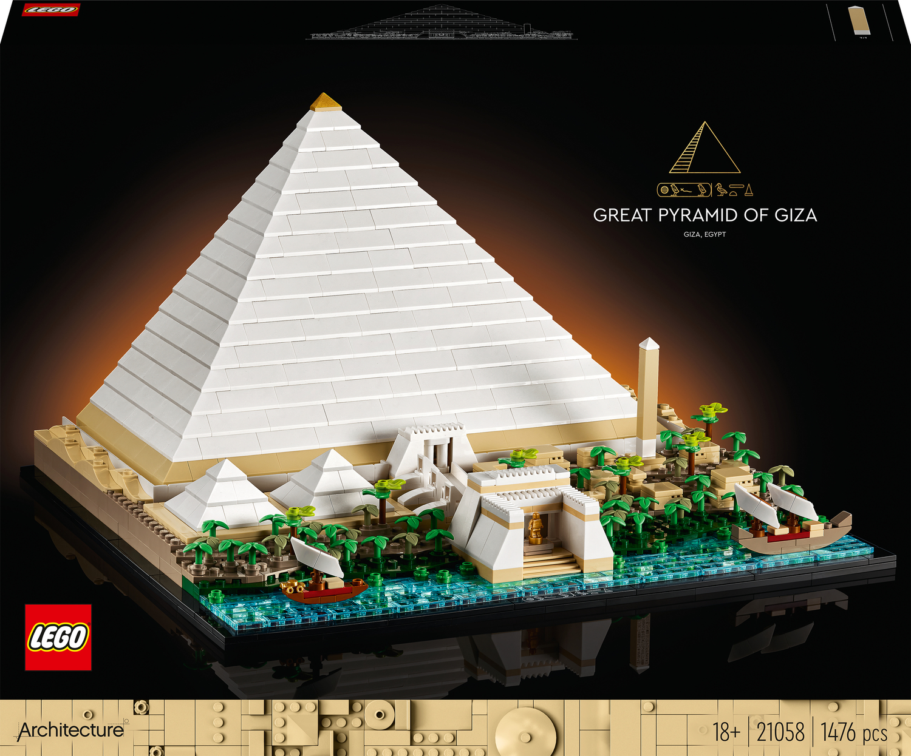
First started as a passion project, LEGO took interest and began to produce LEGO models of famous landmarks. These sets can sometimes be found in post offices and doctor's offices.
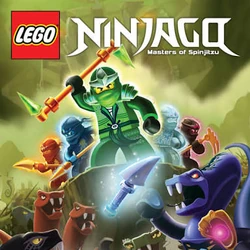
The sets in this franchise launched around the same time an animated TV series under the same name released. The series would soon gain large popularity, and many people still watch it today. Most people that have heard of LEGO have also heard of Ninjago.
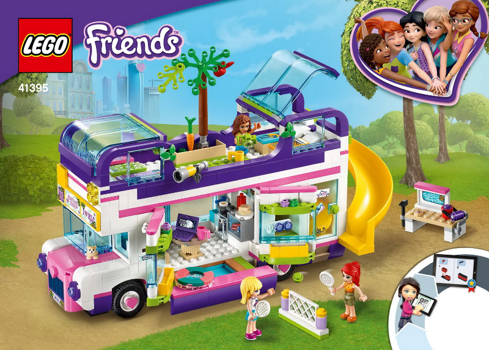
Before the franchise launched, a computer game was released in 1999 under the name LEGO Friends. This "experiment" wouldn't have much implication until 2012, when the sets started releasing. They would be accompanied with a non-LEGO animated TV series, which may have been spurred by the success of LEGO Ninjago. The franchise would see a reboot in 2022.
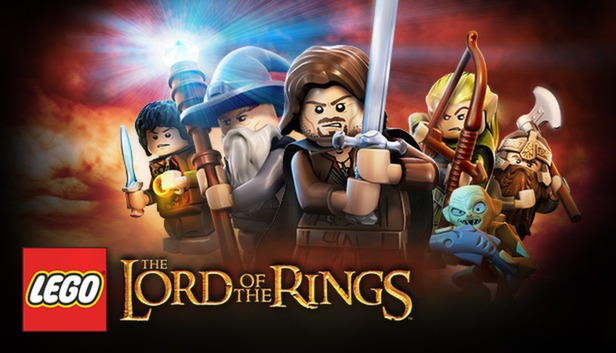
This franchise is discussed in detail on the Lord of the Rings page of this website.
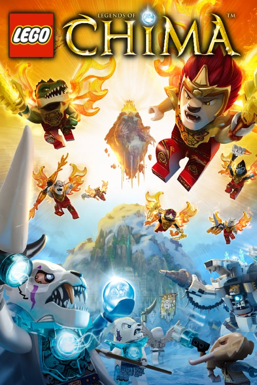
Coinciding with the release of yet another television series under the same name, LEGO Legends of Chima was received with a warm welcome, though for whatever reason it was never as popular as Ninjago. This may be why the franchise was discontinued in 2015, though there are no official sources on this.
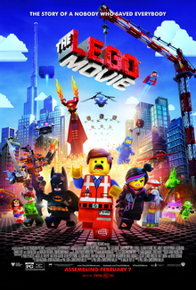
A hit success of 2014, this movie gained a large fanbase and saw massive popularity. The film mimics the stop-motion animation style of popular "Brickfilms", though the animation is CGI. The film would inspire the production of The LEGO Batman Movie, The LEGO Ninjago Movie, and The Lego Movie 2.
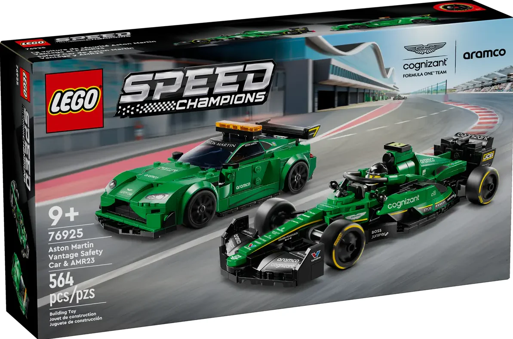
This franchise is designed with adults in mind, setting it apart from many of the other LEGO franchises. The franchise includes cars in LEGO form, and it has been very well received.